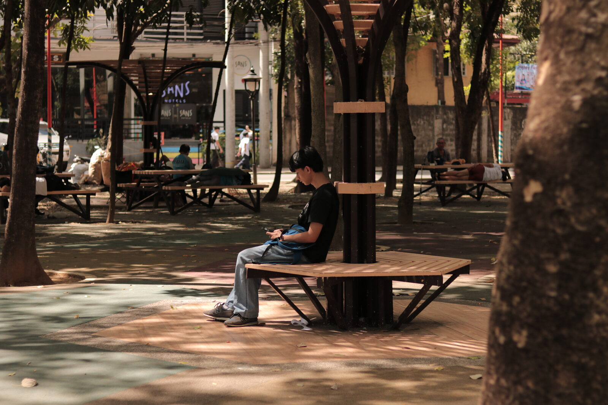
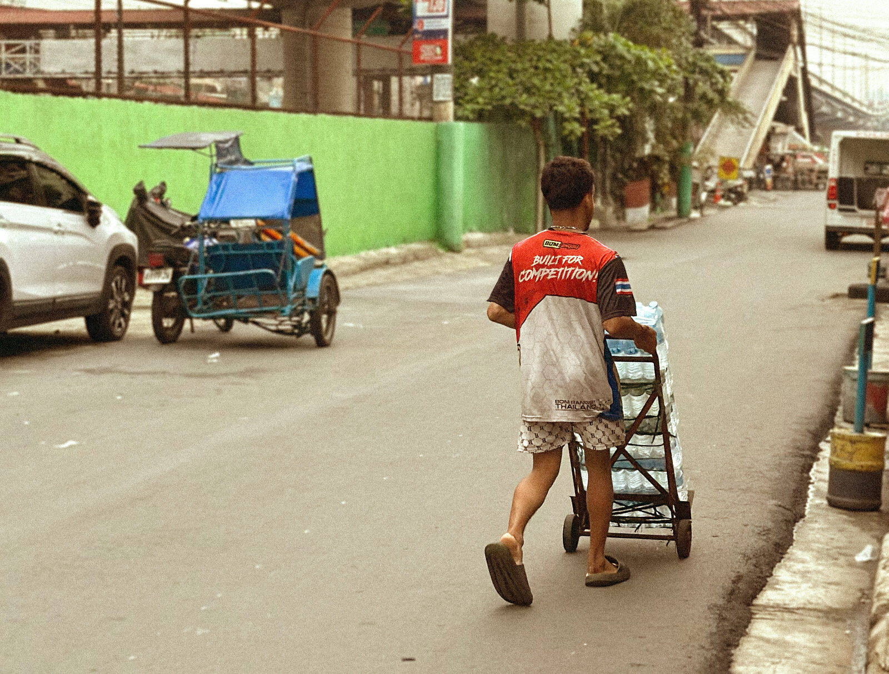
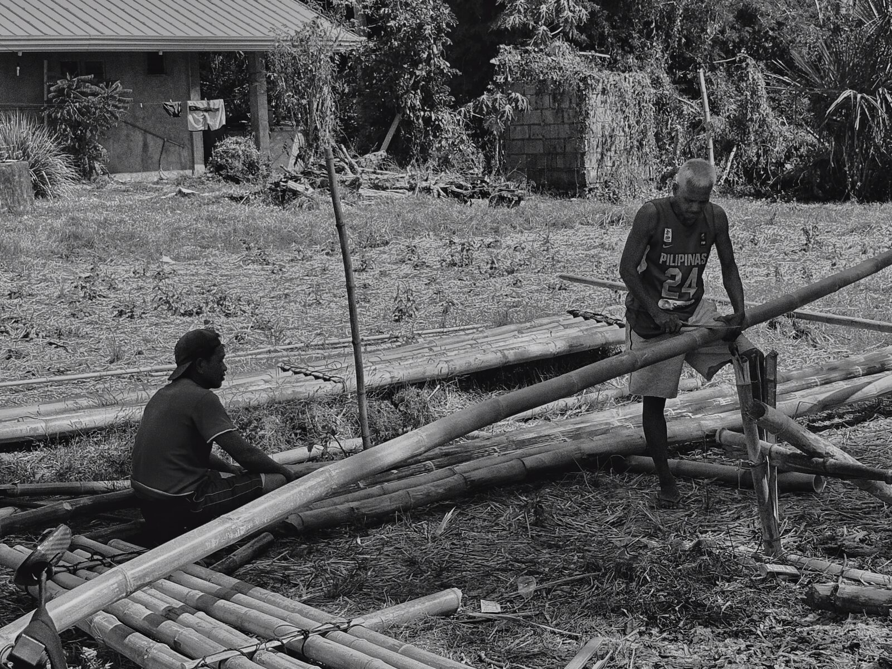
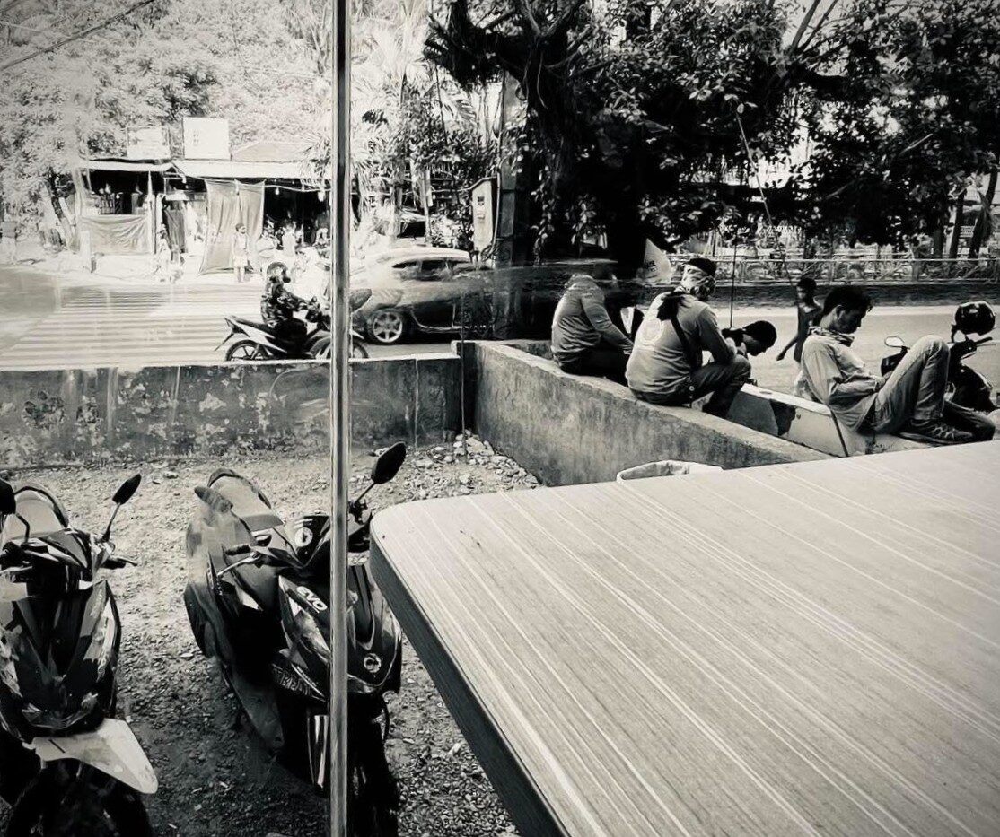
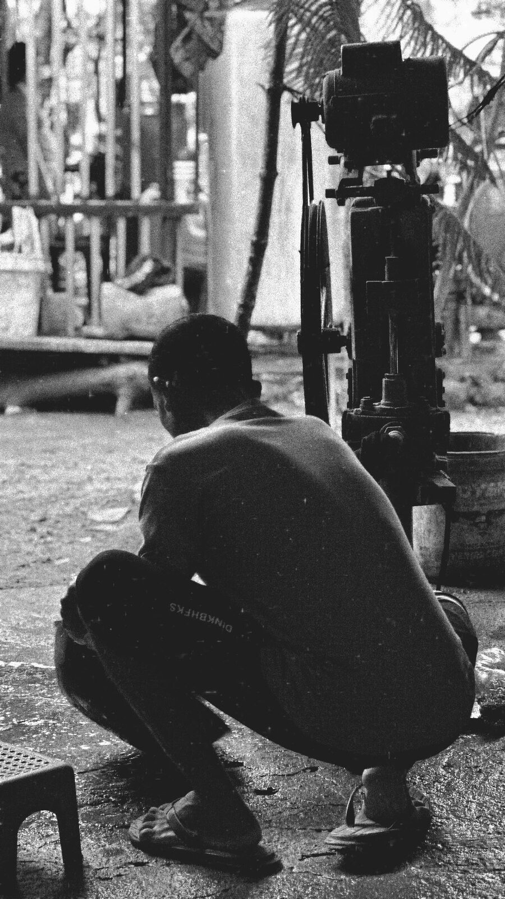

A walk-through exhibition that looks past the usual subjects, the vendor, the product, the crowd, and turns instead to the porters, the back rooms, the worn pathways, and the quiet moments that keep a place running.
Every place runs on the things we overlook. The people, spaces, and objects that hold it together rarely become the picture. This exhibit gives them the spotlight and makes the overlooked its subject.




Ordinary subjects, looked at long enough to become something more. Browse the full set, or open the gallery to leave a reaction and a comment.
Step inside, react to the work, and leave a note for the photographers who made it.
Enter the Gallery →